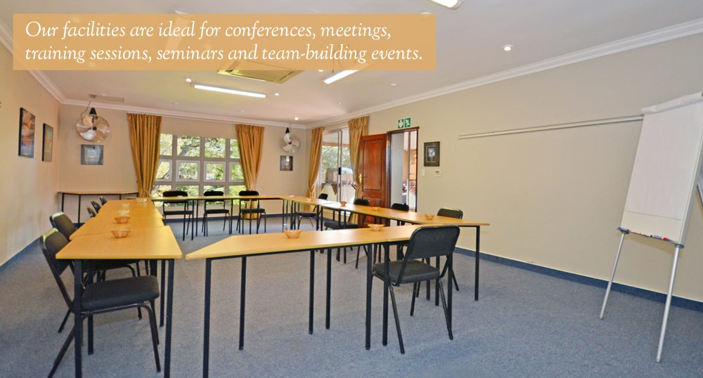

Oaklands Inn is a modern guesthouse and conference venue located in Randburg, Johannesburg.
The establishment offers comfortable accommodation with a focus on convenience, professionalism, and warm hospitality.
It caters to both business and leisure travelers, providing facilities such as well equipped conference rooms, spacious guest suites, and catering services.
The inn prides itself on being easily accessible from major routes in Johannesburg, making it a practical choice for corporate events, training sessions, and private functions.
Its mission is to deliver affordable yet high quality accommodation and event solutions, while its vision is to be recognized as a trusted venue that combines comfort, efficiency, and personalized service.

Oaklands Inn offers a range of accommodation options including standard double rooms, double rooms with patios, one-bedroom apartments, and two-bedroom apartments. Each room is equipped with modern amenities such as air-conditioning, DStv, Wi-Fi, and kitchen facilities in the apartments.
Yes, Oaklands Inn has well-equipped conference rooms and a boardroom that can accommodate various group sizes. The facilities include projectors, plug points, and Wi-Fi, making it suitable for business meetings, workshops, and training sessions.
Yes, Oaklands Inn offers secure parking for guests. There are 75 parking spaces available, ensuring convenience and safety for those staying at the inn or attending events.